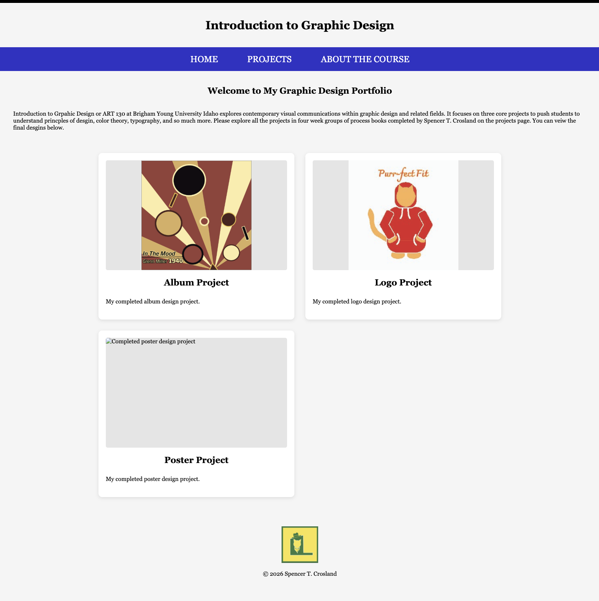

BYU-I Course Projects
All the websites and graphic design projects featured here were developed as part of courses at Brigham Young University–Idaho (BYU-I) by developer Spencer T. Crosland. Each course has its own dedicated section showcasing the projects, assignments, and creative work completed throughout the course. These projects demonstrate the development of graphic design skills, creativity, and the ability to use industry-standard software to bring ideas to life. Take some time to explore each course website and become familiar with the different graphic design projects available. From digital artwork and photo editing to layouts, visual compositions, and creative designs, each project represents an opportunity to learn, experiment, and develop new skills. Have an idea for a project? Visit our Services page to learn more about what Cat Cowboy Designs offers and get in touch for an affordable, personalized quote. We look forward to helping bring your creative ideas to life!
Art 130: Introduction to Graphic Design

Art 130: Introduction to Graphic Design covers the exploration of contemporary visual communications within graphic design and related fields.
Art 125: Adobe CC Basics

Art 125: Adobe CC Basics is a practical introduction to the core features and concepts within Adobe Illustrator, Photoshop, and InDesign (also referred to as the core 3 CC apps). Each software program will be broken into 2 modules (beginner and intermediate features). Students will be tested on their ability to demonstrate how each of these features works or what the concepts mean etc.